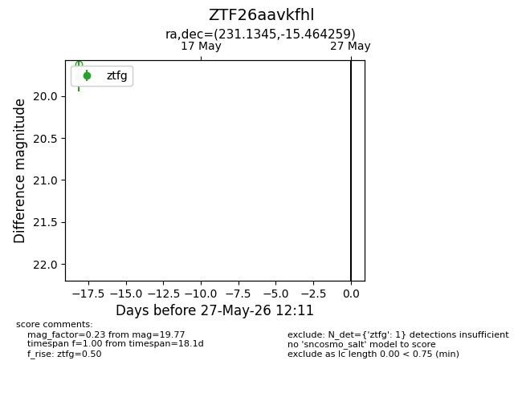
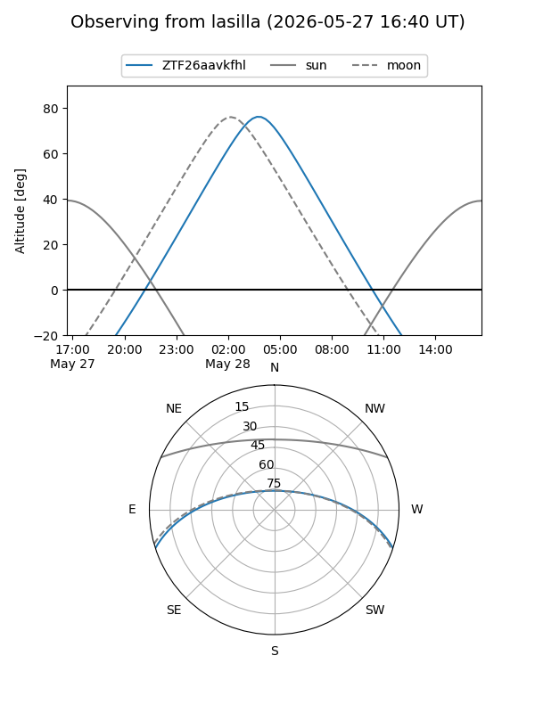
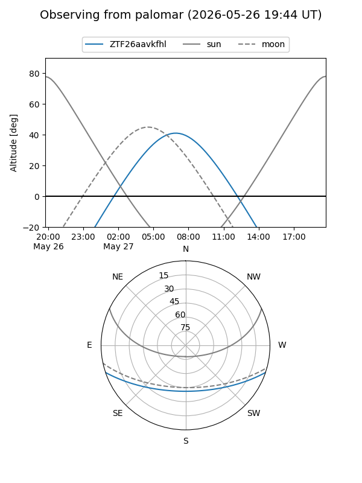

ZTF26aavkfhl
Target ZTF26aavkfhl at 2026-05-27 12:13
Aliases and brokers:
lsst-FINK: link
lsst-Lasair: link
lsst-ALeRCE: link
ztf-FINK: link
ztf-Lasair: link
ztf-ALeRCE: link
alt names
ZTF26aavkfhl (ztf,fink_ztf)
Coordinates:
equatorial (ra, dec) = 231.1345,-15.46426
equatorial (HMS+DMS) = 15:24:32.29,-15:27:51.33
galactic (l, b) = (348.6460,+33.49094)
Flags:
Photometry:
last ztfg=19.77
1 ztfg detections
Lightcurve

Visibility


Additional plots